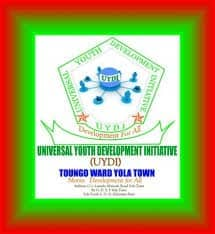

Universal Youth Development Initiative Yola
Tannugol Hakkille Jattugol Hallal
Amin: Ko tan merkudo hakkille tatnugol jom nder bartagol, hayɓugo koofal, e cayugol jokkugol fof maagal Yola.
Baɗal UYDI
Universal Youth Development Initiative (UYDI) Yola ko organisasiyon jom saajel wonde tannugol jom jaafooji fof Yola.

Projaam Njilal
- Caggal Dukkale: Ndabbugol e cayugol
- Tatnugol Koofal: Bartagol jattugol e tekniki
- Tatnugol Jokkugol: Projaam jom cayugol
- Juumbugol Yimande: Projaam njilal yimande
- Cayugol Carrere: Caggal tatnugol maɗinki
Projaamji Naatnude
- Projaamji Tatnugol:
- Tatnugol ilme digital
- Naatnude gasaaji
- Workshopji tatnugol tekniki
- Projaamji Rewbe:
- Campaignji tannugol mbiyu
- Projaamji jokkondiral rewbe
- Projaamji seertinaje ndeer
Yimɓe Maɗɗi
- Ilme mbiyu e tatnugol koofal
- Naatnude lidergol e laawol cayugol
- Jokkondiral rewbe e caggal
- Suddantaaɗo ndeer
- Social entrepreneurship
Get Involved
- Join Us:
- Become a member
- Naatore jokkondiral
- Mentorship programs
- Support:
- Jokkondir e amen
- Sponsor programs
- Sadde hayre